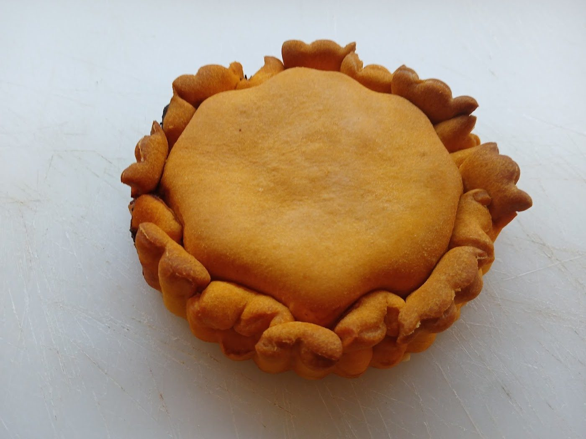
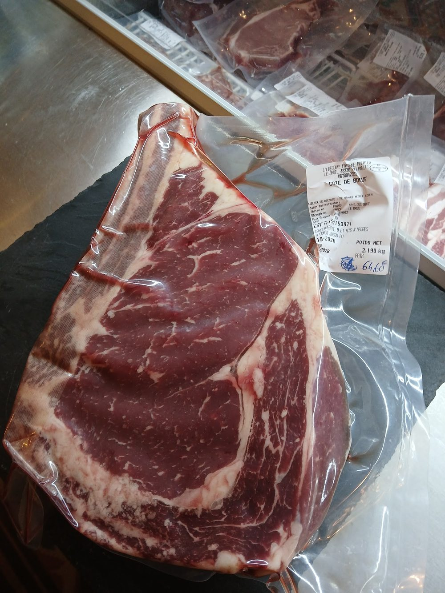
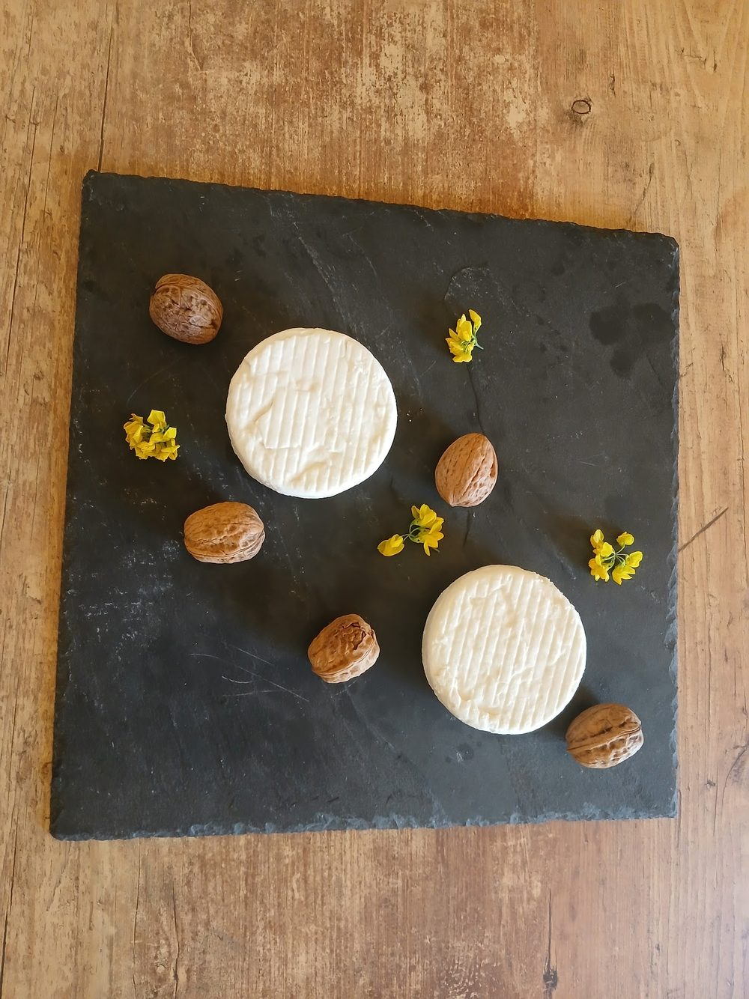
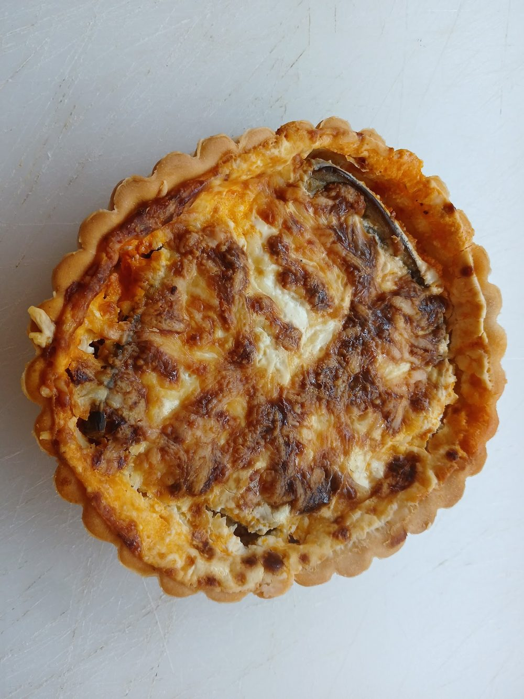

Ce qu’on trouve ici
Une épicerie bien garnie, ouverte en avril 2024 dans une bâtisse de pierre, avec sa terrasse devant la porte. Les rayons suivent les saisons : on vient chercher de quoi cuisiner, composer un pique-nique ou rapporter un produit du pays.
Les clients en parlent pour l’accueil, les prix raisonnables et le choix de produits locaux.
- Fruits et légumes de saison
- Viandes et charcuteries
- Fromages de brebis et de chèvre
- Quiches et tartes salées
- Vins, huile d’olive, confitures
- Glaces, dès les beaux jours
- Et ça change avec les saisons !
Dans les rayons




Sur le chemin des randonneurs
Saint-Saturnin-de-Lucian est un carrefour de sentiers, entre vignes et garrigue. L’Oenorando® de 12 km part de la cave coopérative du village et grimpe jusqu’au rocher des Deux Vierges.
Avant ou après la marche, passez remplir le sac à dos.
Très bon accueil !Alyssia B.
Superbe épicerie, produits frais et prix cohérents !Clément G.
Un accueil fort sympathique et souriant.Philippe F.Lire les 13 avis sur Google
Précommander
Dites-nous ce qu’il vous faut, on prépare. Retrait et paiement en boutique, aucun paiement en ligne. Votre demande part par SMS ou par e-mail et n’est confirmée qu’après notre réponse.
Aucun compte, aucune donnée enregistrée : le message est composé dans votre navigateur et envoyé depuis votre téléphone.
Venir nous voir
4 avenue du Quai
34725 Saint-Saturnin-de-Lucian
Horaires
- LundiFermé
- Mardi8h–12h30 · 16h–19h30
- Mercredi8h–12h30 · 16h–19h30
- Jeudi8h–12h30 · 16h–19h30
- Vendredi8h–12h30 · 16h–19h30
- Samedi8h–12h30 · 16h–19h30
- Dimanche8h–12h30
Les horaires peuvent varier les jours fériés : en cas de doute, un coup de fil.